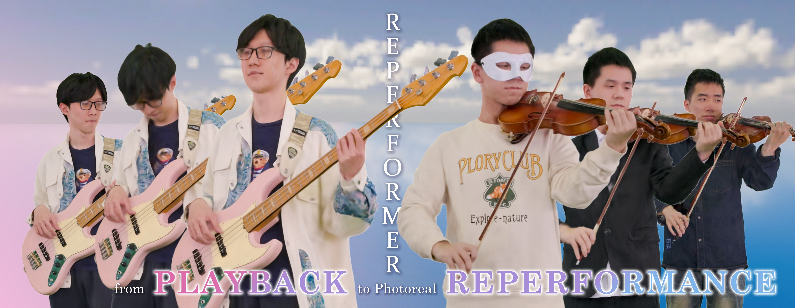

Publications

RePerformer: Immersive Human-centric Volumetric Videos from Playback to Photoreal Reperformance
CVPR 2025

Robust Dual Gaussian Splatting for Immersive Human-centric Volumetric Videos
SIGGRAPH Asia 2024 (TOG)
HiFi4G: High-Fidelity Human Performance Rendering via Compact Gaussian Splatting
CVPR 2024
Instant-NVR: Instant Neural Volumetric Rendering for Human-object Interactions from Monocular RGBD Stream
CVPR 2023